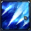

Niobé du Deep
Il a été envoyé au Sanctuaire pour prendre la tête d'Athéna par Rhadamanthe comme beaucoup d'autres spectres car le Juge des Enfers ne faisaient pas totalement confiance aux chevaliers d'Or ressuscités par Hadès.
Personnalité
Alors que Aldébaran contemplait une fleur en revivant par la même occasion l'instant merveilleux où une jeune fille lui offrit cette même fleur , il sentit une présence malveillante. Niobé le paralysa très vite avec une de ses techniques. Aldébaran repensa à la jeune fille. Il reprit le dessus en concentra toute son cosmos pour lancer sa technique Great Horn. Il pensa y avoir survécu mais vit Aldébaran décédé après que ce dernier l'ai utilisé. Saga, Camus , Shura et les autres spectres profitèrent qu'Aldébaran était mort pour traverser son temple. Niobé resta posté à la Maison du Taureau pour liquider ceux qui tenteraient de poursuivre ses collègues spectres. Il livra un petit combat contre Mû. Le chevalier d'Or estima qu'il n'était plus nécessaire de poursuivre leur duel car il dévoila à son adversaire qu'il était déjà mort. Il eu du mal à le croire. Puis son corps se mit à exploser à plusieurs endroits à suivre jusqu'à ce qu'il disparaisse (les effets tardifs et dévastateurs de Great Horn).
Pouvoir principal
Arome mortel
